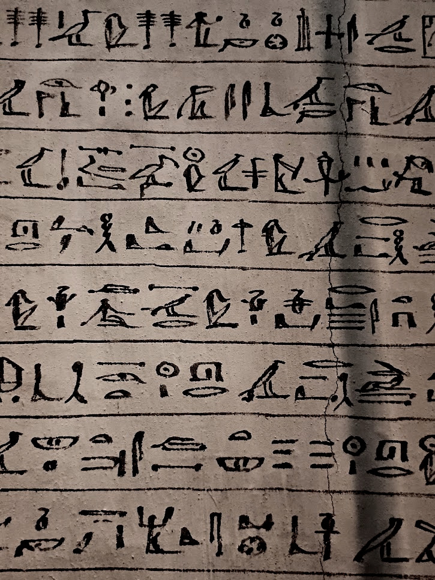

My favourite thing in the Bristol Museum. I think everyone's favourite thing in the Bristol Museum is the imitation Dodo and I love the friezes from Nimrod to the point of making visitors come and admire them. However, my absolute favourite is an Egyptian coffin base with the beautiful hieroglyphs pictured above.
The coffin base is on display with the coffin lid, the lid is elaborately painted. It seems the mummy itself is lost, but we are told the coffin dates from between 675 and 640 BCE, came from Thebes, and belonged to ly-en-Amen-nay-es-nebet-ta, Lady of the House, daughter of Goldworker. We aren't told what the hieroglyphs on the base mean, but perhaps they are the source for this information.
675 to 640 BCE spans the division between the 25th and the 26th Dynasties. The 25th Dynasty, the Nubian Dynasty, originating from the lower Nile, far from Thebes, lasted from around 744 to 656 BCE and ended with an Assyrian invasion, the 26th Dynasty, the Saite Dynasty, was founded in 664 BCE and lasted until 525 BCE when Egypt was conquered by the Persians. While these two dynasties marked the last great resurgence in Egyptian art and culture, the period in which this coffin was created was not kind Thebes, it was sacked in 663 BCE, partially destroyed and plundered by Assyrian forces.
For all of this, the hieroglphs are enchanting! The script is so lively, natural and expressive; it is wonderful to look at something so utterly lost in time and culture but beautiful in a way that remains moving.